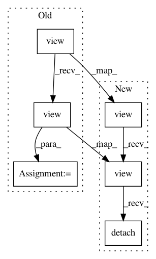

447444fd06594e531ae1141afac78051481e4468,catalyst/rl/offpolicy/algorithms/td3.py,TD3,_quantile_loss,#TD3#Any#Any#Any#Any#Any#,203
Before Change
// B x num_heads x num_atoms x num_critics
// @TODO: smarter way to do this (other than reshaping)?
atoms_ids_tp1_min = atoms_tp1.mean(dim=-2).argmin(dim=-1).view(-1)
atoms_tp1 = atoms_tp1.view(-1, self.num_atoms, self._num_critics)
atoms_tp1 = \
atoms_tp1[range(len(atoms_tp1)), :, atoms_ids_tp1_min].\
view(-1, self._num_heads, self.num_atoms).detach()
// B x num_heads x num_atoms
atoms_target_t = rewards_t + (1 - done_t) * gammas * atoms_tp1
value_loss = [
After Change
// [{bs * num_heads}; num_atoms; num_critics] -> min over all critics
// [{bs * num_heads}; num_atoms; 1] -> target view transform
// [bs; num_heads; num_atoms]
atoms_tp1 = (
atoms_tp1
.view(-1, self.num_atoms, self._num_critics)[
range(len(atoms_ids_tp1_min)), :, atoms_ids_tp1_min]
.view(-1, self._num_heads, self.num_atoms)
)
// [bs; num_heads; num_atoms] -> many-heads view transform
// [{bs * num_heads}; num_atoms]
atoms_target_t = (
rewards_t + (1 - done_t) * gammas * atoms_tp1
).view(-1, self.num_atoms).detach()
value_loss = [
utils.quantile_loss(
// [{bs * num_heads}; num_atoms]
In pattern: SUPERPATTERN
Frequency: 3
Non-data size: 6
Instances
Project Name: catalyst-team/catalyst
Commit Name: 447444fd06594e531ae1141afac78051481e4468
Time: 2019-10-31
Author: scitator@gmail.com
File Name: catalyst/rl/offpolicy/algorithms/td3.py
Class Name: TD3
Method Name: _quantile_loss
Project Name: catalyst-team/catalyst
Commit Name: 447444fd06594e531ae1141afac78051481e4468
Time: 2019-10-31
Author: scitator@gmail.com
File Name: catalyst/rl/offpolicy/algorithms/sac.py
Class Name: SAC
Method Name: _quantile_loss
Project Name: catalyst-team/catalyst
Commit Name: 447444fd06594e531ae1141afac78051481e4468
Time: 2019-10-31
Author: scitator@gmail.com
File Name: catalyst/rl/offpolicy/algorithms/sac.py
Class Name: SAC
Method Name: _categorical_loss